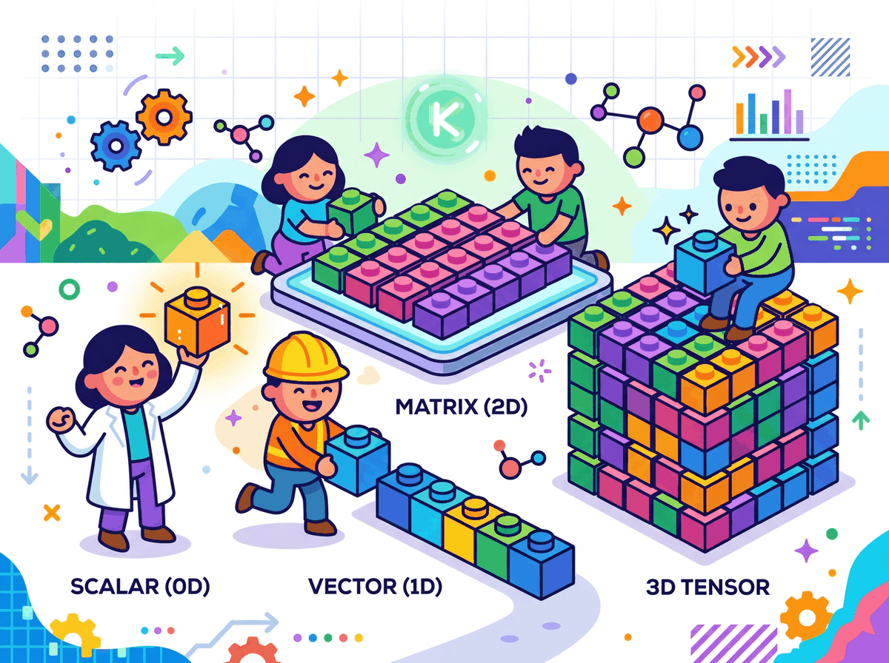
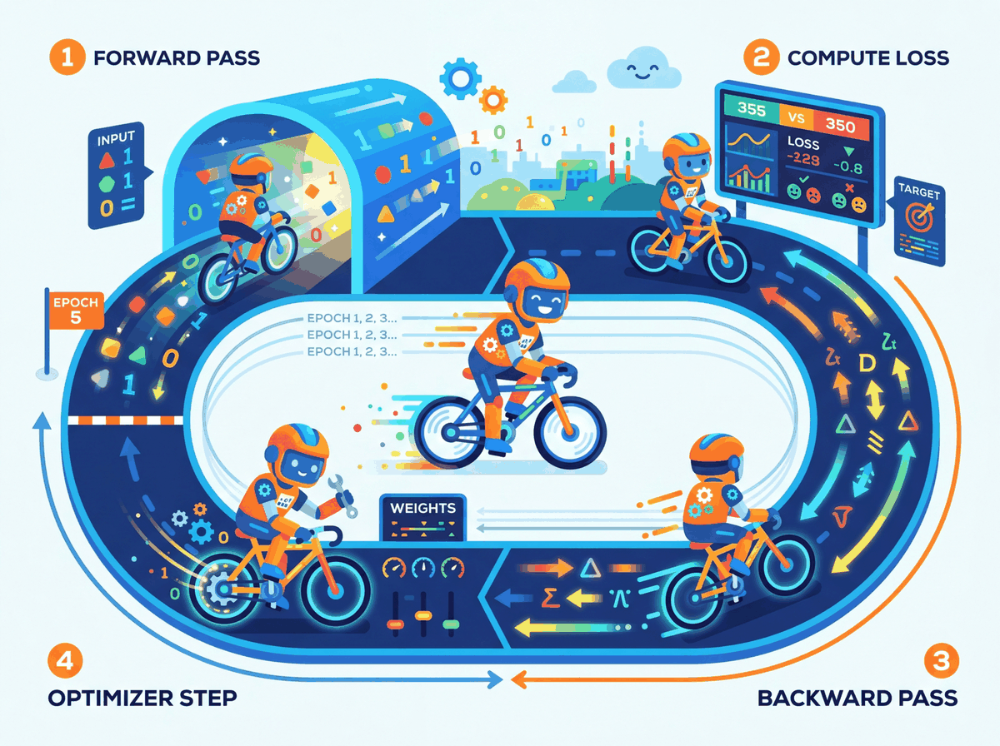

I used to write for loops. Then I discovered tensors, and now I judge everyone who still writes for loops.
Tensor AI Agent
Prerequisites
This hands-on tutorial assumes you have read Section 0.1: ML Basics (especially gradient descent) and Section 0.2: Deep Learning Essentials (neural network layers and backpropagation). You should have Python installed along with PyTorch; a basic working knowledge of NumPy arrays will make tensors immediately familiar.
PyTorch is the language we will use to build, train, and understand LLMs throughout this book. Every transformer layer, every attention head, and every training loop in the chapters ahead will be expressed in PyTorch. Investing time here pays compound interest in every module that follows.
PyTorch is a Python library for numerical computation on tensors with two superpowers: automatic differentiation and seamless GPU acceleration. If NumPy gives you a fast calculator, PyTorch gives you a fast calculator that can also compute its own derivatives and run on a graphics card. This section walks through every concept you need, starting from the lowest level (tensors) and building up to a complete training pipeline.
1. Tensors: The Fundamental Data Structure BASIC

A tensor is a multi-dimensional array. Scalars, vectors, matrices, and higher-dimensional arrays are all tensors. PyTorch tensors behave like NumPy arrays but carry extra metadata: a dtype, a device (CPU or GPU), and an optional link to a computational graph for gradient computation. Code Fragment 0.3.1 below puts this into practice.
1.1 Creating Tensors
The following examples show how to create tensors from Python lists, NumPy arrays, and built-in factory functions.
# PyTorch implementation
# Key operations: results display
import torch
# From Python lists
a = torch.tensor([1.0, 2.0, 3.0])
print(a, a.dtype)
# Common factory functions
zeros = torch.zeros(2, 3) # 2x3 of zeros
ones = torch.ones(2, 3) # 2x3 of ones
rand = torch.randn(2, 3) # 2x3 from N(0,1)
seq = torch.arange(0, 10, 2) # [0, 2, 4, 6, 8]
# From NumPy (shares memory; no copy!)
import numpy as np
np_arr = np.array([1, 2, 3])
t = torch.from_numpy(np_arr)
print(t)
PyTorch defaults to float32 for floating-point tensors. This matters because GPUs are optimized for 32-bit arithmetic, and most deep learning happens at this precision. When you need to save memory (as we will with large language models), you can use float16 or bfloat16, a technique explored in depth in Chapter 8: Quantization and Inference Optimization.
Who: ML engineer at a fintech company building a credit scoring model in PyTorch
Situation: Loading financial features from a Pandas DataFrame into PyTorch tensors for a neural network that predicts default probability.
Problem: The model trained successfully but produced significantly worse AUC (0.71) than the same architecture in scikit-learn (0.79). Predictions clustered around 0.5, as if the model could not distinguish between borrowers.
Dilemma: The team spent two days reviewing the architecture, loss function, and hyperparameters. Nothing seemed wrong. They considered switching back to scikit-learn entirely.
Decision: A senior engineer added print(X_tensor.dtype) and discovered the tensors were int64 instead of float32. Pandas integer columns were converted without explicit dtype casting, and PyTorch silently performed integer arithmetic (truncating all fractional gradients to zero).
How: Changed torch.tensor(df.values) to torch.tensor(df.values, dtype=torch.float32). One line of code.
Result: AUC jumped to 0.80, matching the scikit-learn baseline. Total debugging time wasted: 16 engineer-hours.
Lesson: Always explicitly set dtype=torch.float32 when creating tensors from external data. PyTorch will not warn you about integer arithmetic in places where you expect floating-point. Code Fragment 0.3.2 below puts this into practice.
1.2 Indexing, Slicing, and Reshaping
These operations let you select sub-regions of a tensor and change its dimensionality without copying data.
# PyTorch implementation
# Key operations: results display
x = torch.arange(12).reshape(3, 4)
print("Original:\n", x)
print("Row 0: ", x[0]) # first row
print("Col 1: ", x[:, 1]) # second column
print("Subset: ", x[0:2, 1:3]) # rows 0-1, cols 1-2
# Reshape vs. View
flat = x.view(-1) # flatten (must be contiguous)
print("Flat: ", flat)
# Unsqueeze / Squeeze for adding/removing dimensions
row = torch.tensor([1, 2, 3])
print("Shape before unsqueeze:", row.shape)
print("Shape after unsqueeze(0):", row.unsqueeze(0).shape)
1.3 Broadcasting
Broadcasting lets PyTorch perform element-wise operations on tensors of different shapes by automatically expanding dimensions. The rules mirror NumPy: dimensions are compared from right to left, and a dimension of size 1 is stretched to match the other tensor. Code Fragment 0.3.3 below puts this into practice.
# Add a row vector to every row of a matrix
matrix = torch.ones(3, 3)
row_vec = torch.tensor([10, 20, 30])
result = matrix + row_vec # row_vec broadcasts across dim 0
print(result)
Broadcasting can mask bugs. If you add tensors of shapes (3, 1) and (1, 4), PyTorch happily produces a (3, 4) result with no error. Always verify shapes with print(tensor.shape) when debugging unexpected results. Code Fragment 0.3.4 below puts this into practice.
1.4 Device Management (CPU/GPU)
PyTorch tensors can live on CPU or GPU, and all operands in an operation must share the same device.
# PyTorch implementation
# Key operations: results display
device = torch.device("cuda" if torch.cuda.is_available() else "cpu")
print("Using device:", device)
# Move tensors to the chosen device
x = torch.randn(3, 3, device=device)
# Or move an existing tensor
y = torch.randn(3, 3).to(device)
# Operations require BOTH tensors on the same device
z = x + y # works because both on 'device'
Trying cpu_tensor + gpu_tensor raises RuntimeError: Expected all tensors to be on the same device. The fix: move everything to the same device before operating. A good pattern is to define device once at the top of your script and use .to(device) everywhere.
Every ML engineer has at least one 3 AM debugging story where the bug was a missing .cuda() call. The "Expected all tensors to be on the same device" error message has probably caused more coffee consumption than any other line of code in history.
2. Autograd: Automatic Differentiation INTERMEDIATE
Autograd is PyTorch's engine for computing gradients automatically, implementing the backpropagation algorithm covered in Section 0.2. When you set requires_grad=True on a tensor, PyTorch records every operation performed on it in a directed acyclic graph (DAG). Calling .backward() on the final scalar output traverses that graph in reverse to compute the gradient of the output with respect to every leaf tensor. Code Fragment 0.3.5 below puts this into practice.
2.1 A Minimal Example
This snippet computes a simple polynomial, calls .backward(), and inspects the resulting gradient.
# PyTorch implementation
# Key operations: gradient computation, results display
x = torch.tensor(3.0, requires_grad=True)
y = x**2 + 2*x + 1 # y = x^2 + 2x + 1
y.backward() # dy/dx = 2x + 2 = 8 at x=3
print(x.grad)
2.2 The Computational Graph
Every operation creates a node in the graph. Intermediate tensors store a .grad_fn that records how they were created. The graph below shows what happens for a simple loss computation.
requires_grad=True. Yellow nodes record the operation for backward traversal.2.3 Gradient Accumulation
Gradients in PyTorch accumulate by default. If you call .backward() twice without zeroing gradients, the second set of gradients is added to the first. This is intentional (it enables gradient accumulation across mini-batches, a technique revisited in Section 13.3 on fine-tuning hyperparameters), but forgetting to zero gradients is the most common autograd bug. Code Fragment 0.3.6 below puts this into practice.
# PyTorch implementation
# Key operations: forward pass computation, gradient computation, results display
x = torch.tensor(2.0, requires_grad=True)
# First forward + backward
y = x * 3
y.backward()
print("After 1st backward:", x.grad) # 3.0
# Second forward + backward WITHOUT zeroing
y = x * 3
y.backward()
print("After 2nd backward:", x.grad) # 6.0 (accumulated!)
# The fix: always zero gradients before each backward pass
x.grad.zero_()
y = x * 3
y.backward()
print("After zeroing: ", x.grad) # 3.0
During inference (or any time you do not need gradients), wrap your code in with torch.no_grad():. This disables graph construction, reduces memory usage, and speeds up computation. You will see this in every evaluation loop.
Automatic differentiation, the engine behind PyTorch's autograd, is a computational realization of the chain rule from calculus. But its significance extends far beyond convenience. In the 1960s, control theorist Robert Wengert and later Andreas Griewank recognized that any program composed of differentiable primitives could be mechanically differentiated by tracing its computation graph. This insight, known as the "differentiable programming" paradigm, blurs the boundary between writing software and defining mathematical models. Physicist and Fields medalist Richard Borcherds has noted that automatic differentiation is, in essence, a dual-number algebra applied at industrial scale. Every PyTorch computation graph is simultaneously a program and a mathematical expression, and .backward() exploits this duality to compute exact derivatives in time proportional to the forward pass. This is why gradient-based optimization scales to billions of parameters: the cost of computing the gradient is never more than a small constant multiple of the cost of computing the function itself.
3. Building Models with nn.Module INTERMEDIATE
Raw tensors and autograd are powerful, but PyTorch provides torch.nn to organize parameters, layers, and forward computations into reusable chapters. Every model you build in this book, from simple classifiers to the full Transformer architecture in Chapter 4, will subclass nn.Module. Code Fragment 0.3.7 below puts this into practice.
3.1 Your First nn.Module
The following class defines a two-layer network by subclassing nn.Module and implementing the forward method.
# Define SimpleNet
# Key operations: forward pass computation, results display
import torch.nn as nn
class SimpleNet(nn.Module):
def __init__(self, input_dim, hidden_dim, output_dim):
super().__init__()
self.fc1 = nn.Linear(input_dim, hidden_dim)
self.relu = nn.ReLU()
self.fc2 = nn.Linear(hidden_dim, output_dim)
# Forward pass: define computation graph
def forward(self, x):
x = self.fc1(x)
x = self.relu(x)
x = self.fc2(x)
return x
model = SimpleNet(input_dim=784, hidden_dim=128, output_dim=10)
print(model)
# Count parameters
total_params = sum(p.numel() for p in model.parameters())
print(f"Total parameters: {total_params:,}")
The __init__ method declares layers; the forward method defines the computation. Never call model.forward(x) directly. Instead, call model(x), which runs forward along with any registered hooks.
4. Data Loading: Dataset and DataLoader INTERMEDIATE
PyTorch decouples data storage from data loading through two abstractions. Dataset defines how to access individual samples. DataLoader wraps a dataset to provide batching, shuffling, and parallel loading. Code Fragment 0.3.8 below puts this into practice.
# PyTorch implementation
# Key operations: training loop, results display
from torch.utils.data import Dataset, DataLoader
import torchvision.transforms as transforms
from torchvision.datasets import FashionMNIST
# Define a transform pipeline
transform = transforms.Compose([
transforms.ToTensor(), # PIL image -> tensor, scales to [0,1]
transforms.Normalize((0.2860,), (0.3530,)) # FashionMNIST stats
])
# Download and load training data
train_dataset = FashionMNIST(
root="./data", train=True, download=True, transform=transform
)
# Create a DataLoader
train_loader = DataLoader(
train_dataset, batch_size=64, shuffle=True, num_workers=2
)
# Iterate to see the shape of a batch
images, labels = next(iter(train_loader))
print(f"Batch images shape: {images.shape}")
print(f"Batch labels shape: {labels.shape}")
4.1 Custom Datasets
When your data is not a standard benchmark, subclass Dataset and implement __len__ and __getitem__: Code Fragment 0.3.9 below puts this into practice.
# Define MyDataset; implement __len__, __getitem__
# See inline comments for step-by-step details.
class MyDataset(Dataset):
def __init__(self, X, y):
self.X = torch.tensor(X, dtype=torch.float32)
self.y = torch.tensor(y, dtype=torch.long)
def __len__(self):
return len(self.X)
def __getitem__(self, idx):
return self.X[idx], self.y[idx]
5. The Training Loop INTERMEDIATE

Training a neural network follows a rhythmic four-step pattern: forward pass, compute loss, backward pass, optimizer step. Every training loop you write, from a simple classifier to a billion-parameter LLM, follows this same skeleton.
Who: Research intern fine-tuning a GPT-2 model for customer support response generation
Situation: Wrote a custom training loop (instead of using the Hugging Face Trainer) to have more control over logging and gradient accumulation.
Problem: The model's loss decreased for the first 200 steps, then suddenly diverged to infinity. Restarting from the checkpoint produced the same explosion at roughly the same point.
Dilemma: The intern suspected a learning rate issue and tried reducing it from 5e-5 to 1e-6. The explosion was delayed but still occurred. They considered abandoning the custom loop for the Trainer API.
Decision: A mentor suggested printing gradient norms. They grew exponentially across steps because optimizer.zero_grad() was accidentally placed after optimizer.step() instead of before the forward pass, causing gradients to accumulate across batches.
How: Moved optimizer.zero_grad() to the first line inside the batch loop, immediately before outputs = model(input_ids).
Result: Loss decreased smoothly to 2.3 over 5,000 steps. The model generated coherent customer support responses. The fix was a one-line reorder.
Lesson: The training loop order (zero_grad, forward, loss, backward, step) is sacred. Moving any step out of sequence produces bugs that can be extremely hard to diagnose without gradient monitoring.
5.1 Complete Training Loop
Before we write our first training loop, let us understand the optimizer that drives learning. Momentum smooths out noisy gradients by maintaining an exponential moving average of past gradients, preventing the optimizer from oscillating on noisy surfaces. Adaptive learning rates give each parameter its own learning rate, scaled by the history of its gradients; parameters with consistently large gradients get smaller steps, and vice versa. Adam combines both ideas. AdamW improves on Adam by decoupling weight decay from the gradient update, which produces better generalization and is now the preferred optimizer for training large language models. Code Fragment 0.3.10 below puts this into practice.
| Optimizer | Learning Rate | Momentum | Weight Decay | Best For |
|---|---|---|---|---|
| SGD | Single global rate | Optional (off by default) | Coupled with gradient | Convex problems, fine control |
| Adam | Per-parameter adaptive | Built in (first moment) | Coupled with gradient | Fast prototyping, general use |
| AdamW | Per-parameter adaptive | Built in (first moment) | Decoupled (proper regularization) | LLM pretraining, best generalization |
# PyTorch implementation
# Key operations: loss calculation, training loop, gradient computation
import torch
import torch.nn as nn
import torch.optim as optim
# Assume model, train_loader, device are already defined
model = model.to(device)
criterion = nn.CrossEntropyLoss()
optimizer = optim.Adam(model.parameters(), lr=1e-3)
num_epochs = 3
for epoch in range(num_epochs):
model.train() # set training mode
running_loss = 0.0
for batch_idx, (images, labels) in enumerate(train_loader):
images, labels = images.to(device), labels.to(device)
# Flatten 28x28 images to vectors of length 784
images = images.view(images.size(0), -1)
# Step 0: Zero gradients from previous step
optimizer.zero_grad()
# Step 1: Forward pass
outputs = model(images)
# Step 2: Compute loss
loss = criterion(outputs, labels)
# Step 3: Backward pass (compute gradients)
loss.backward()
# Step 4: Update weights
optimizer.step()
running_loss += loss.item()
avg_loss = running_loss / len(train_loader)
print(f"Epoch [{epoch+1}/{num_epochs}], Loss: {avg_loss:.4f}")
Always call model.train() before training and model.eval() before evaluation. These toggle behaviors of layers like Dropout and BatchNorm. Forgetting model.eval() during validation leads to noisy, unreliable metrics.
6. Saving and Loading Models INTERMEDIATE
PyTorch stores learned parameters in a dictionary called the state_dict. Saving the state dict (rather than the full model object) is the recommended approach because it is architecture-independent and portable. Code Fragment 0.3.11 below puts this into practice.
# Save model weights
torch.save(model.state_dict(), "model_weights.pth")
# Load into a fresh model instance
loaded_model = SimpleNet(input_dim=784, hidden_dim=128, output_dim=10)
loaded_model.load_state_dict(torch.load("model_weights.pth", weights_only=True))
loaded_model.eval()
# Save a full checkpoint (weights + optimizer + epoch) for resumable training
checkpoint = {
"epoch": epoch,
"model_state_dict": model.state_dict(),
"optimizer_state_dict": optimizer.state_dict(),
"loss": avg_loss,
}
torch.save(checkpoint, "checkpoint.pth")
# Resume from checkpoint
ckpt = torch.load("checkpoint.pth", weights_only=True)
model.load_state_dict(ckpt["model_state_dict"])
optimizer.load_state_dict(ckpt["optimizer_state_dict"])
start_epoch = ckpt["epoch"] + 1
Always pass weights_only=True to torch.load() in modern PyTorch (1.13+). This prevents arbitrary code execution from untrusted checkpoint files. If you need to load optimizer state or other non-tensor data, use weights_only=False only with files you trust.
7. Debugging: Hooks, Gradient Inspection, and Profiling ADVANCED
When your model does not train, you need tools to look inside. PyTorch provides several mechanisms for introspection. Code Fragment 0.3.12 below puts this into practice.
7.1 Inspecting Gradients
After a backward pass, you can iterate over named parameters to check gradient statistics for signs of vanishing or exploding gradients.
# Check gradients after a backward pass
for name, param in model.named_parameters():
if param.grad is not None:
print(f"{name:20s} grad mean={param.grad.mean():.6f} "
f"std={param.grad.std():.6f}")
7.2 Forward and Backward Hooks
Hooks let you inspect (or modify) data flowing through a module without changing its code. This is invaluable for debugging and later for techniques like activation patching in interpretability research. Code Fragment 0.3.13 below puts this into practice.
# Register a forward hook that prints the output shape
def print_shape_hook(module, input, output):
print(f"{module.__class__.__name__:15s} output shape: {output.shape}")
hooks = []
for name, layer in model.named_children():
h = layer.register_forward_hook(print_shape_hook)
hooks.append(h)
# Run one forward pass to see shapes
dummy = torch.randn(1, 784).to(device)
_ = model(dummy)
# Clean up hooks when done
for h in hooks:
h.remove()
7.3 Profiling with torch.profiler
The built-in profiler measures CPU and GPU time per operation, helping you identify performance bottlenecks.
# PyTorch implementation
# Key operations: loss calculation, training loop, gradient computation
from torch.profiler import profile, ProfilerActivity
# Profile execution to find performance bottlenecks
with profile(activities=[ProfilerActivity.CPU], record_shapes=True) as prof:
for i, (images, labels) in enumerate(train_loader):
images = images.view(images.size(0), -1)
outputs = model(images)
loss = criterion(outputs, labels)
# Compute gradients via backpropagation
loss.backward()
if i >= 4:
break
print(prof.key_averages().table(sort_by="cpu_time_total", row_limit=5))
Profiling reveals where time is actually spent. In small models, data loading often dominates. In larger models, matrix multiplications dominate. Knowing this guides your optimization effort: increase num_workers for data-bound training, or use mixed precision for compute-bound training.
8. Common Mistakes and How to Fix Them INTERMEDIATE
| Symptom | Cause | Fix |
|---|---|---|
RuntimeError: mat1 and mat2 shapes cannot be multiplied |
Input tensor shape does not match the layer's expected input dimension | Print shapes with print(x.shape) before each layer; ensure you flatten or reshape correctly |
Loss is nan after a few steps |
Learning rate is too high, or numerical overflow | Lower the learning rate; add gradient clipping with torch.nn.utils.clip_grad_norm_ |
| Loss never decreases | Forgot optimizer.zero_grad() or wrong loss function |
Verify the training loop skeleton; try overfitting on a single batch first |
Expected all tensors to be on the same device |
Model is on GPU but data is on CPU (or vice versa) | Call .to(device) on both model and data |
| Validation accuracy worse than training | Forgot model.eval() or torch.no_grad() |
Always wrap evaluation in model.eval() and with torch.no_grad(): |
9. Lab: Build and Train a FashionMNIST Classifier ADVANCED
Let us put everything together. In this lab you will build a fully connected neural network that classifies FashionMNIST images into 10 categories (T-shirt, Trouser, Pullover, Dress, Coat, Sandal, Shirt, Sneaker, Bag, Ankle boot). The complete script below is copy-pasteable and runnable.
#!/usr/bin/env python3
"""Lab 0.3: FashionMNIST Classifier in PyTorch (from scratch)."""
import torch
import torch.nn as nn
import torch.optim as optim
from torch.utils.data import DataLoader
from torchvision import datasets, transforms
# ── Hyperparameters ──────────────────────────────────────────
BATCH_SIZE = 64
LEARNING_RATE = 1e-3
NUM_EPOCHS = 10
HIDDEN_DIM = 256
# ── Device ───────────────────────────────────────────────────
device = torch.device("cuda" if torch.cuda.is_available() else "cpu")
print(f"Training on: {device}")
# ── Data ─────────────────────────────────────────────────────
transform = transforms.Compose([
transforms.ToTensor(),
transforms.Normalize((0.2860,), (0.3530,)),
])
train_data = datasets.FashionMNIST("./data", train=True, download=True, transform=transform)
test_data = datasets.FashionMNIST("./data", train=False, download=True, transform=transform)
train_loader = DataLoader(train_data, batch_size=BATCH_SIZE, shuffle=True)
test_loader = DataLoader(test_data, batch_size=BATCH_SIZE, shuffle=False)
# ── Model ────────────────────────────────────────────────────
class FashionClassifier(nn.Module):
def __init__(self, hidden_dim):
super().__init__()
self.net = nn.Sequential(
nn.Flatten(), # (B,1,28,28) -> (B,784)
nn.Linear(784, hidden_dim),
nn.ReLU(),
nn.Dropout(0.2),
nn.Linear(hidden_dim, hidden_dim),
nn.ReLU(),
nn.Dropout(0.2),
nn.Linear(hidden_dim, 10),
)
def forward(self, x):
return self.net(x)
model = FashionClassifier(HIDDEN_DIM).to(device)
print(model)
print(f"Parameters: {sum(p.numel() for p in model.parameters()):,}")
# ── Loss and Optimizer ───────────────────────────────────────
criterion = nn.CrossEntropyLoss()
optimizer = optim.Adam(model.parameters(), lr=LEARNING_RATE)
# ── Training ─────────────────────────────────────────────────
def train_one_epoch(model, loader, criterion, optimizer, device):
model.train()
total_loss, correct, total = 0.0, 0, 0
for images, labels in loader:
images, labels = images.to(device), labels.to(device)
optimizer.zero_grad()
outputs = model(images)
loss = criterion(outputs, labels)
loss.backward()
optimizer.step()
total_loss += loss.item() * labels.size(0)
correct += (outputs.argmax(1) == labels).sum().item()
total += labels.size(0)
return total_loss / total, correct / total
# ── Evaluation ───────────────────────────────────────────────
def evaluate(model, loader, criterion, device):
model.eval()
total_loss, correct, total = 0.0, 0, 0
with torch.no_grad():
for images, labels in loader:
images, labels = images.to(device), labels.to(device)
outputs = model(images)
loss = criterion(outputs, labels)
total_loss += loss.item() * labels.size(0)
correct += (outputs.argmax(1) == labels).sum().item()
total += labels.size(0)
return total_loss / total, correct / total
# ── Run ──────────────────────────────────────────────────────
for epoch in range(NUM_EPOCHS):
train_loss, train_acc = train_one_epoch(model, train_loader, criterion, optimizer, device)
test_loss, test_acc = evaluate(model, test_loader, criterion, device)
print(f"Epoch {epoch+1:2d}/{NUM_EPOCHS} "
f"Train Loss: {train_loss:.4f} Acc: {train_acc:.4f} "
f"Test Loss: {test_loss:.4f} Acc: {test_acc:.4f}")
# ── Save ─────────────────────────────────────────────────────
torch.save({
"model_state_dict": model.state_dict(),
"optimizer_state_dict": optimizer.state_dict(),
"test_acc": test_acc,
}, "fashion_classifier_checkpoint.pth")
print(f"\nModel saved. Final test accuracy: {test_acc:.4f}")
9.1 Lab Discussion
Let us dissect the key design decisions:
- Flatten layer: FashionMNIST images arrive as
(B, 1, 28, 28)tensors. Usingnn.Flatten()inside the model (rather than.view()outside) keeps the reshaping logic self-contained. - Dropout(0.2): Randomly zeroes 20% of activations during training. This regularizes the network and helps close the gap between train and test accuracy.
- Adam optimizer: Adapts the learning rate per parameter. A solid default for most problems; you rarely need to tune its internals.
- Separate train/eval functions: Keeping training and evaluation as standalone functions makes the code reusable. You will use this same skeleton for transformer models.
9.2 Exercises for Further Practice
- Overfit a single batch: Take one batch from the train loader and train on it for 100 steps. Can you drive the loss to zero? If yes, your model and training loop are correct. If no, you have a bug.
- Add a learning rate scheduler: Use
torch.optim.lr_scheduler.StepLRto decay the learning rate by 0.1 every 5 epochs. Does test accuracy improve? - Switch to a CNN: Replace the fully connected layers with convolutional layers (
nn.Conv2d,nn.MaxPool2d). You should be able to reach over 90% test accuracy. - Add gradient clipping: Insert
torch.nn.utils.clip_grad_norm_(model.parameters(), max_norm=1.0)beforeoptimizer.step(). Monitor the gradient norms before and after clipping.
7. Modern PyTorch: Performance and Scale ADVANCED
The training loop and model patterns covered so far are the foundation of every PyTorch project. However, modern deep learning, particularly LLM training and inference, demands tools that go beyond the basics. PyTorch 2.x introduced a compiler, and the ecosystem provides built-in support for mixed precision and distributed training. This section covers the three most important performance tools you will encounter in practice.
7.1 torch.compile and PyTorch 2.x
Starting with PyTorch 2.0, torch.compile transforms your eager-mode model into an
optimized graph that runs significantly faster. Under the hood, it uses TorchDynamo
to capture the computation graph from Python bytecode, then passes that graph to the
TorchInductor compiler backend, which generates optimized Triton (GPU) or C++/OpenMP
(CPU) kernels. The key insight is that you do not need to change your model code at all; you
simply wrap it with torch.compile() and let the compiler handle fusion, memory
planning, and kernel selection.
torch.compile offers three compilation modes, each trading compile time for runtime speed:
| Mode | Compile Time | Runtime Speed | Best For |
|---|---|---|---|
default | Fast | Good speedup | General use, quick iteration |
reduce-overhead | Moderate | Better (reduces CPU overhead) | Small batches, inference servers |
max-autotune | Slow (benchmarks many kernels) | Best possible | Production training, final deployment |
A few common pitfalls to watch for: (1) the first call triggers compilation, so you will see a
one-time latency spike; (2) data-dependent control flow (e.g., if x.sum() > 0)
causes "graph breaks" that reduce optimization opportunities; and (3) not all custom CUDA
extensions are supported yet. When in doubt, start with default mode and profile.
Code Fragment 0.3.16 below puts this into practice.
# PyTorch implementation
# See inline comments for step-by-step details.
import torch
# Define a simple model
model = MyTransformerBlock(d_model=512, n_heads=8).cuda()
# Without torch.compile: standard eager execution
output_eager = model(input_tensor)
# With torch.compile: optimized execution
compiled_model = torch.compile(model, mode="reduce-overhead")
# First call triggers compilation (slow), subsequent calls are fast
output_compiled = compiled_model(input_tensor)
# In benchmarks, expect 1.3x to 2x speedup on Transformer blocks
Advanced torch.compile: Dynamic Shapes, Fullgraph Mode, and Debugging
Getting the most out of torch.compile in production requires understanding three
additional concepts beyond the basic wrapper. First, dynamic shapes: by default,
the compiler assumes fixed input shapes and triggers a full recompilation whenever the shape
changes. For NLP workloads where sequence lengths vary across batches, this causes repeated
compilations that negate any speedup. Setting dynamic=True tells the compiler to
generate shape-generic kernels that work across a range of input sizes, at the cost of slightly
less aggressive optimization for any single shape. In Transformer training with variable-length
sequences, dynamic=True is almost always the right choice.
Second, fullgraph mode: the fullgraph=True option tells the compiler
to capture the entire model as a single graph, which enables global optimizations but will raise
an error if any graph break occurs. This is useful for validating that your model is fully
compilable before deploying to production. If graph breaks are present, the compiler silently
falls back to partial compilation, which may deliver only modest speedups. Running with
fullgraph=True during development ensures you catch and eliminate graph breaks early.
Third, debugging and profiling: the torch._dynamo module exposes
configuration flags that help you understand what the compiler is doing. Setting
torch._dynamo.config.verbose = True logs every graph break with a traceback,
making it straightforward to identify problematic code patterns. The
torch.utils.benchmark module provides a clean way to compare eager and compiled
execution times with statistically meaningful measurements.
Code Fragment 0.3.17 below puts this into practice.
# Strict mode: fails if any graph break is detected
compiled_strict = torch.compile(model, fullgraph=True)
# Dynamic shapes: avoid recompilation when input sizes change
compiled_dynamic = torch.compile(model, dynamic=True)
# Combine max-autotune with fullgraph for production
compiled_prod = torch.compile(
model,
mode="max-autotune",
fullgraph=True,
dynamic=True,
)
# Debugging: see what the compiler is doing
import torch._dynamo
torch._dynamo.config.verbose = True # Log graph breaks with tracebacks
torch._dynamo.config.suppress_errors = False # Fail loudly on issues
# Profile compiled vs. eager to measure actual speedup
import torch.utils.benchmark as bench
timer_eager = bench.Timer(
stmt="model(x)",
globals={"model": model, "x": input_tensor},
)
timer_compiled = bench.Timer(
stmt="compiled_model(x)",
globals={"compiled_model": compiled_prod, "x": input_tensor},
)
print(f"Eager: {timer_eager.timeit(100).mean * 1000:.2f} ms")
print(f"Compiled: {timer_compiled.timeit(100).mean * 1000:.2f} ms")
torch.export: Deployment Beyond Python
PyTorch 2.x also introduced torch.export, which captures a model as a clean,
self-contained graph representation suitable for deployment outside of Python. While
torch.compile accelerates training and eager-mode inference,
torch.export targets production deployment scenarios: shipping a model to a mobile
device, embedding it in a C++ application, or converting it to a format consumed by a
purpose-built serving stack. The exported graph can be lowered to backends like ExecuTorch
(for edge and mobile devices) or AOTInductor (for server deployment without the Python
runtime overhead).
Code Fragment 0.3.18 below puts this into practice.
# torch.export: capture a deployment-ready graph
from torch.export import export
# Define example inputs for tracing
example_input = torch.randn(1, 128, 512).cuda()
# Export the model (captures the full graph)
exported = export(model, (example_input,))
# The exported program can be serialized and loaded without Python
torch.export.save(exported, "model_exported.pt2")
# For server deployment with AOTInductor (generates a .so library)
# torch._inductor.aot_compile(model, (example_input,))
FSDP2 and torch.compile. PyTorch 2.4 and later includes a rewritten Fully Sharded Data Parallel implementation (commonly called FSDP2 or fully_shard in the torch.distributed namespace) designed to compose cleanly with torch.compile. The original FSDP relied on runtime hooks that caused graph breaks, limiting compilation benefits. FSDP2 integrates sharding logic directly into the compiler graph, enabling end-to-end optimization of distributed training. If you are training large models across multiple GPUs and want both sharding and compilation, FSDP2 is the recommended path.
Combining torch.compile with Mixed Precision
In practice, torch.compile and mixed precision are used together rather than
in isolation. The compiler is aware of autocast regions and can fuse operations
across precision boundaries, generating kernels that perform the cast and the computation in a
single step. This combination typically yields the best results: mixed precision reduces memory
traffic and enables Tensor Core utilization, while the compiler eliminates kernel launch overhead
and fuses adjacent operations. The following example shows the recommended production pattern
that combines both techniques.
# PyTorch implementation
# Key operations: loss calculation, training loop, gradient computation
import torch
from torch.amp import autocast
# Compile the model first
model = MyTransformerBlock(d_model=512, n_heads=8).cuda()
compiled_model = torch.compile(model, mode="max-autotune", dynamic=True)
optimizer = torch.optim.AdamW(compiled_model.parameters(), lr=3e-4)
for batch_x, batch_y in train_loader:
batch_x, batch_y = batch_x.cuda(), batch_y.cuda()
optimizer.zero_grad()
# BF16 autocast inside the compiled model: the compiler fuses casts
with autocast(device_type="cuda", dtype=torch.bfloat16):
output = compiled_model(batch_x)
loss = criterion(output, batch_y)
loss.backward()
optimizer.step()
# On Ampere+ GPUs, this pattern typically yields 2x to 3x throughput
# improvement over eager FP32 execution.
7.2 Mixed Precision Training with torch.amp
Modern GPUs have specialized hardware (Tensor Cores) that operate much faster on 16-bit floating-point numbers than on 32-bit. Mixed precision training uses 16-bit for most operations (forward pass, backward pass) while keeping a 32-bit master copy of the weights for the optimizer update. This roughly halves memory usage and can double training throughput.
PyTorch provides torch.amp (Automatic Mixed Precision) with two components:
torch.amp.autocast automatically selects the right precision for each operation
(matmuls in FP16/BF16, reductions in FP32), and torch.amp.GradScaler prevents
underflow by scaling the loss before the backward pass and unscaling gradients before the
optimizer step. On Ampere GPUs (A100, RTX 3090) and newer, BF16 (bfloat16) is
preferred over FP16 because it has the same exponent range as FP32, which eliminates most
overflow/underflow issues and makes GradScaler unnecessary.
Code Fragment 0.3.20 below puts this into practice.
# PyTorch implementation
# Key operations: loss calculation, training loop, gradient computation
import torch
from torch.amp import autocast, GradScaler
model = MyModel().cuda()
optimizer = torch.optim.AdamW(model.parameters(), lr=3e-4)
scaler = GradScaler() # Only needed for FP16; skip for BF16
for epoch in range(num_epochs):
for batch_x, batch_y in train_loader:
batch_x, batch_y = batch_x.cuda(), batch_y.cuda()
optimizer.zero_grad()
# Forward pass in mixed precision
with autocast(device_type="cuda", dtype=torch.float16):
output = model(batch_x)
loss = criterion(output, batch_y)
# Backward pass with gradient scaling
scaler.scale(loss).backward()
scaler.step(optimizer)
scaler.update()
# For BF16 (preferred on Ampere+ GPUs), simply use:
# with autocast(device_type="cuda", dtype=torch.bfloat16):
# output = model(batch_x)
# loss = criterion(output, batch_y)
# loss.backward() # No scaler needed
# optimizer.step()
7.3 Distributed Data Parallel (DDP)
When a single GPU is not enough, torch.nn.parallel.DistributedDataParallel (DDP) is
the standard way to scale training across multiple GPUs (or multiple machines). DDP replicates
the model on each GPU, splits each batch across the replicas, and synchronizes gradients with an
all-reduce operation after each backward pass. Because each GPU processes a different slice of
the data, the effective batch size scales linearly with the number of GPUs.
DDP is preferred over the older DataParallel because it avoids the GIL bottleneck
and overlaps communication with computation. Setting it up requires initializing a process group
and wrapping your model, but the training loop itself remains almost identical to the single-GPU
version. For LLM training at larger scales, you will encounter FSDP (Fully Sharded Data
Parallel), which shards both parameters and gradients across GPUs. We will revisit distributed
training in Chapter 6 when we discuss pretraining.
Code Fragment 0.3.21 below puts this into practice.
# PyTorch implementation
# Key operations: loss calculation, training loop, gradient computation
import torch
import torch.distributed as dist
from torch.nn.parallel import DistributedDataParallel as DDP
# Initialize the process group (one process per GPU)
dist.init_process_group(backend="nccl")
local_rank = int(os.environ["LOCAL_RANK"])
torch.cuda.set_device(local_rank)
# Create model and wrap with DDP
model = MyModel().cuda(local_rank)
model = DDP(model, device_ids=[local_rank])
# Training loop is the same as single-GPU
for batch_x, batch_y in train_loader:
optimizer.zero_grad()
output = model(batch_x.cuda(local_rank))
loss = criterion(output, batch_y.cuda(local_rank))
loss.backward() # DDP handles gradient sync automatically
optimizer.step()
# Launch with: torchrun --nproc_per_node=4 train.py
7.4 DDP in Practice: What Happens Under the Hood
Understanding DDP's mechanics helps you debug distributed training issues and make informed choices
about scaling. When you wrap a model with DistributedDataParallel, three things happen
at initialization: (1) the model parameters are broadcast from rank 0 to all other processes, ensuring
every GPU starts with identical weights; (2) DDP registers backward hooks on every parameter, which
trigger gradient synchronization automatically; and (3) parameters are grouped into "buckets" for
communication efficiency, so that all-reduce operations overlap with backward computation.
The bucket-based overlap is critical for performance. Rather than waiting until all gradients are
computed and then performing a single all-reduce, DDP starts synchronizing the gradients of later
layers (which finish their backward pass first) while earlier layers are still computing. This
overlap means that for well-balanced models, communication is almost entirely hidden behind computation.
You can control bucket size with the bucket_cap_mb parameter (default: 25 MB).
A few practical details matter when using DDP: Code Fragment 0.3.22 below puts this into practice.
- DistributedSampler: Each GPU must see a different subset of the data. Use
torch.utils.data.distributed.DistributedSamplerwith your DataLoader to ensure non-overlapping splits. Remember to callsampler.set_epoch(epoch)at the start of each epoch so that shuffling differs across epochs. - Batch size scaling: The effective batch size is
per_gpu_batch_size * num_gpus. If you increase from 1 GPU to 8 GPUs, the effective batch size grows 8x. You may need to adjust the learning rate accordingly (linear scaling rule: multiply learning rate by the same factor). - Saving checkpoints: Only save from rank 0 to avoid duplicate writes. Guard your save
logic with
if dist.get_rank() == 0. - Launching: Use
torchrun(ortorch.distributed.launch) to spawn one process per GPU. For multi-node training, you also need to set--nnodes,--node_rank, and--master_addr.
# Complete DDP training setup with DistributedSampler
from torch.utils.data.distributed import DistributedSampler
sampler = DistributedSampler(train_dataset, shuffle=True)
train_loader = DataLoader(train_dataset, batch_size=32, sampler=sampler)
for epoch in range(num_epochs):
sampler.set_epoch(epoch) # Ensure different shuffling each epoch
for batch_x, batch_y in train_loader:
optimizer.zero_grad()
output = model(batch_x.cuda(local_rank))
loss = criterion(output, batch_y.cuda(local_rank))
loss.backward()
optimizer.step()
# Save only from rank 0
if dist.get_rank() == 0:
torch.save(model.module.state_dict(), f"checkpoint_epoch_{epoch}.pt")
Note the use of model.module.state_dict() rather than model.state_dict()
when saving. The DDP wrapper adds a .module attribute that references the original model.
Saving through .module produces a state dict compatible with non-DDP loading, which is
almost always what you want.
DDP works well when the entire model, its gradients, and the optimizer states fit in a single GPU's memory. For a 7B parameter model with AdamW in FP32, that total is roughly 112 GB, which exceeds even an 80 GB A100. At that point, you need FSDP (Fully Sharded Data Parallel) or DeepSpeed ZeRO, which shard parameters and optimizer states across GPUs. We cover these techniques in detail in Section 6.6.
At the top of every training script, set torch.manual_seed(42), random.seed(42), and np.random.seed(42). Reproducibility saves hours of debugging when results change between runs for no obvious reason.
Key Takeaways
- Tensors are the atomic data structure. Master creation, reshaping, indexing, and device management before anything else.
- Autograd builds a computational graph dynamically. Calling
.backward()walks the graph in reverse to compute gradients. Always remember to zero gradients between iterations. - nn.Module organizes your model. Define layers in
__init__, wire them inforward, and call the model (not.forward()directly) to benefit from hooks and other machinery. - DataLoader handles batching, shuffling, and parallel loading. Pair it with
Datasetfor standard or custom data. - The training loop follows a fixed rhythm: zero gradients, forward, loss, backward, step. Every neural network training (from this classifier to GPT) follows this pattern.
- Checkpointing saves both model and optimizer state so you can resume training after interruptions. Use
state_dictfor portability. - Debugging tools (hooks, gradient inspection, profiler) are not luxuries. Use them early and often. A few minutes of profiling can save hours of guessing.
- Start simple. Overfit a single batch. Then scale to the full dataset. Then tune. This progression catches bugs at the cheapest possible stage.
PyTorch continues to evolve rapidly. PyTorch 2.x introduced torch.compile, which automatically generates optimized GPU kernels through graph capture and code generation. The ecosystem now includes torchtune for LLM fine-tuning, torchchat for local inference, and tight integration with Hugging Face Transformers and Accelerate for distributed training. Meanwhile, JAX/Flax remains the primary alternative for large-scale training at Google.
What's Next?
In the next section, Section 0.4: Reinforcement Learning Foundations, we introduce reinforcement learning foundations, which will become essential when we study RLHF and alignment techniques later.
The original PyTorch paper explaining the design philosophy behind dynamic computation graphs and eager execution. It covers the autograd system and performance optimizations discussed throughout this tutorial. Recommended for readers who want to understand why PyTorch works the way it does.
The definitive reference for all PyTorch APIs, including tensor operations, nn.Module, autograd, and DataLoader. Every code example in this section links back to concepts documented here. Essential as a companion reference while working through the tutorial exercises.
PyTorch Tutorials: "Deep Learning with PyTorch: A 60 Minute Blitz."
The official quick-start tutorial covering tensors, autograd, and neural networks in a hands-on format. It complements this section by offering an alternative walkthrough of the same core concepts. Perfect for beginners who want additional practice after completing this chapter.
Stevens, E., Antiga, L., & Viehmann, T. (2020). Deep Learning with PyTorch. Manning Publications.
A comprehensive, freely available book covering PyTorch fundamentals from tensors through deployment, with practical projects at each stage. Chapters 3 through 5 align closely with this section's tensor and autograd coverage. Ideal for self-study learners who prefer book-length treatment over tutorials.
Karpathy, A. (2022). "micrograd: A tiny autograd engine."
A minimal autograd engine implemented in roughly 100 lines of Python that demystifies how PyTorch's autograd system works internally. Reading the source code builds deep intuition for the backward pass mechanics covered in this section. Highly recommended for anyone who wants to truly understand automatic differentiation.
PyTorch Performance Tuning Guide.
The official guide to profiling and optimizing PyTorch training loops, covering GPU utilization, data loading bottlenecks, and mixed-precision training. Directly relevant to the performance considerations mentioned in this section. Best suited for practitioners moving from prototyping to production workloads.